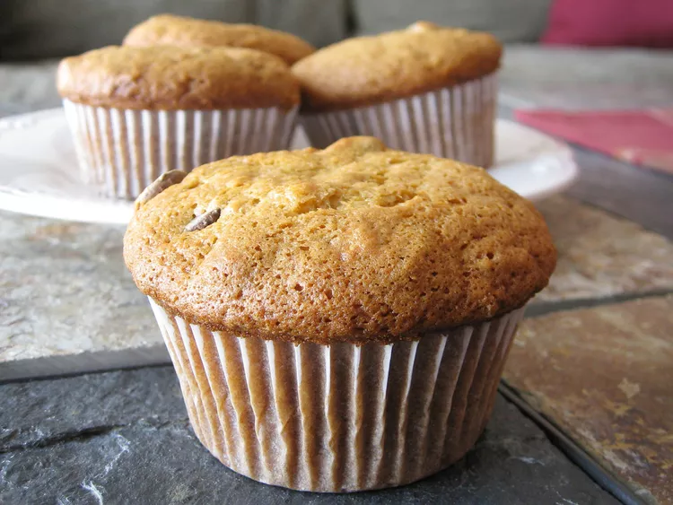

Muffins

Description
Start your day in the most delicious way:With homemade banana muffins!
INGREDIENTS
- Flour
- Leaveners
- Salt
- Sugar
- Egg
- Butter
STEPS
- Sift the dry ingredients together in one bowl. Mix the wet ingredients in another bowl.
- Fold the dry mixture into the wet mixture.
- Spoon the batter into prepared muffin tins. Bake the muffins in the preheated oven.
- In an oven preheated to 350 degrees F, a dozen banana muffins should be fully baked in 25 to 30 minutes.